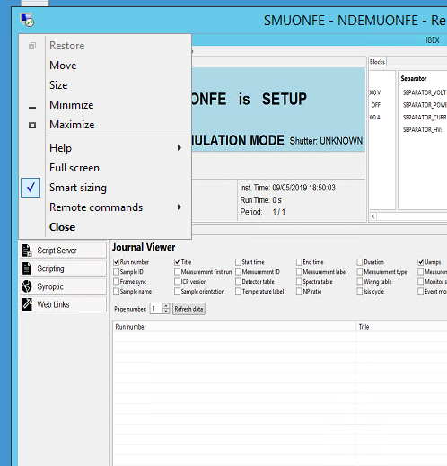

Computer Troubleshooting
Issue related to the computer that IBEX is running on
Screen Resolution needs to be Set on a small screen to view a larger screen remotely
The resolution is settable on a remote desktop, even to a resolution bigger than the current screen. To do this there is a menu item on the remote desktop window for “smart sizing” which does just this.

It doesn’t seem to persist on server 2012 unless you edit it into the .rdp file (and it also requires that you don’t select full screen or it takes a lower resolution). I’ve edited the .rdp file appropriately on the NDHSMUONFE desktop so that this works at 1920x1200. The key bits are at the top here – but you we can fiddle the resolution down a bit if a different aspect ratio works better.
screen mode id:i:1
use multimon:i:0
desktopwidth:i:1920
desktopheight:i:1200
smartsizing:i:1
...
Cannot VNC into the machine
Check the network is up (ping NDX<INST>).
If it is, check the VNC process is running on the NDX machine (there should be a VNC icon in the task bar).
If not start it by double-clicking the entry in the windows autostart menu (c:\ProgramData\Microsoft\Windows\Start Menu\Programs\StartUp) and start it manually. VNC does not run as a windows service on NDX computers - it is running in “user mode” in the background, started on login
Data fills up volume too rapidly on an Instrument
(generating Nagios errors or disk full errors)
This is usually an issue when an instrument changes their mode of data taking and it is particularly common for instruments which have changed recently to using event mode data collection or altered the scheme they use (where the amount of data which can be produced may be much larger). Good questions to ask are:
Are any monitors being used in event mode (usually not a good idea, better to histogram)
Have the jaws been opened up or is white beam falling on any detectors (check setup with scientist)
Any unusually rapid data taking? (e.g. 15s runs with large-ish files)
Data Disk available space
Varies widely per instrument and the space is tailored over time to match the needs of the instrument (with spare space as a buffer against exceptional usage).
Space for data to reside on the instrument so it can be analysed locally is provided by a cache which is purged on most instruments using a scheduled task with robocopy (robocopy /? for details). Cache sizes vary widely per instrument. Some instruments with low data rates have caches with more gentle purging strategies. Caching on most high volume instruments will use a robocopy task with the MINAGE parameter set to 1 or 2 remove files that are 1 or 2 days old. Fewer instruments purge on a monthly basis (e.g. MINAGE:30), muons and reflectometers generally have smaller data files.
Availability in the cache for 1 day minimum is required for local copying programs on all instruments to have data available for copying from the instrument data share. The External Export cache may be cleared of recent data files if space is limited, but NOT the instrument Data area (these will be removed only when archived).
The Clean and purging tasks run as privileged tasks in the scheduled tasks library on the guest VMs. Where specially large and controlled caching is needed (on WISH currently) a more generic powershell script purge.ps1 is run as a task on the host - the difference being that the cache trims to a fill level of over 90% on age and currently will not empty over time. This allows maximum local data (about 2 cycles normally) to be available for local analysis. In both cases, files are first moved to an area for deletion and then deleted by a separate task which runs later.
System Disk Getting Full; Finding Space
Often the system disk gets full because of logging, or windows updates etc. You can free up space by doing the following:
VNC to machine, check no-one is using it
Run
Tree Size(\\isis\installs\ISISAPPS\TreesizePro)and analyse the C drive:Flag any large files that you are worried about deleting to Chris
Check size of
instrument/var/logsmove any large logs to back<inst area>\Backups$\stage-deleted\<instrument>. Do this by creating a directory on c, moving files in then copying to this because it is write once.
Uninstall apps which shouldn’t be there (if you have admin access then removing mysql installer - community save 600Mb)
If you have remote desktop and a little more time then:
Run
Disk Clean-Upon C in user mode and remove all default filesRun it in admin mode by clicking the button
Remove all the default files it lets you
Getting 1920 x 1200 (or other) resolution on Daxten (analogue) connection to a monitor which supports this
Dual monitors with one replicated by a Daxten or a single remote Daxten monitor may need this as 1920 x 1200 monitors are less common in default resolution lists. Digital connections are normally fine but in this case the connection has to be analogue.
When a monitor is being driven though a remote analogue VGA connection, there is no feedback to the computer to select the correct monitor resolution. In this case the resolution must be forced on the graphics card and in Windows to be correct. The essentials are
Install the analogue monitor driver in the advanced display settings for the screen - once this is associated with the display
Use the Graphics card Manufacturer utility to set up a custom 1920 x 1200 resolution (if necessary) and refresh rate (go low on refresh rate e.g. 51Hz if the graphics card considers the refresh rate too high).
Ensure this is applied to the correct display.
for more details see https://github.com/ISISComputingGroup/ControlsWork/issues/720#issuecomment-1413986492
IRIS: Drives are not mapping correctly
On IRIS when the machine is rebooted the mapped drives don’t automatically reconnect for some reason. This means there data is not copied to the analysis machine. The drives are reconnected by opening them in file manager in windows then it is done.
Remote desktop client keep freezing/hanging
Try the following as administrator on the machine that you are running remote desktop client on:
* Run gpedit.msc
* Navigate to Computer Configuration > Administration Templates > Windows Components > Remote Desktop Services > Remote Desktop Connection Client.
* Set the "Turn Off UDP On Client" setting to Enabled.
User says they can not see their nexus data files on external machine
Unable to communicate with MOXA ports
We encountered this issue in August 2017 on HRPD. Neither SECI nor IBEX could communicate with the MOXA. We solved the problem on the fly by remapping the ports from COM blocks 5-20 to 21-36. NPort Administrator had several ports in the former block marked as in use in spite of no devices being active. The ultimate fix was to clear out the offending registry value:
Click start → Run → type regedit and click OK button
Navigate to
HKEY_LOCAL_MACHINE\SYSTEM\CurrentControlSet\Control\COM Name ArbiterNow on the right panel, you can see the key
ComDB. Right-click it and click modifyIn value Data section select all and delete reset to zero
Restart the machine if needed (to do this remotely use the command
shutdown -r -t 0
A similar (but I think unrelated) problem was found in June 2018 on ZOOM. Some ports in a MOXA were found to not communicate with a Julabo. According to both the lights on the MOXA and the MOXA’s web interface there was data being transmitted both to and from the device. However, when transmitting to the device (either via hyperterminal or IOC) no actual data was received. Restarting the MOXA had no affect. The problem was ultimately not resolved, the Julabos were moved to different ports.
Can not rename/delete/move a file/folder
This happens when windows locks a file for you. The lock can either be because of a local process or because of a file is shared from another computer.
Local Process
Close items that might be using the file, especially command line consoles in that directory. If you still can’t find it load “Process Explorer” (sysinternals some of the machines have this in the start menu). Then click Menu -> Find -> Find File or Handle ... type the path and this will give you the process id that is holding the lock.
Checking windows event log on NDX computer for process crash/resource issues
The windows application and system event logs contain useful details to help diagnose system, process and resource issues check as crashes and memory issues. Accessing this via the computer management (compmgmt) application is in a separate sharepoint document